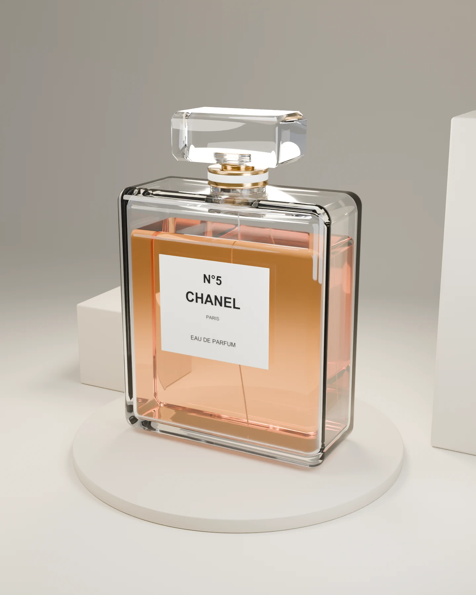
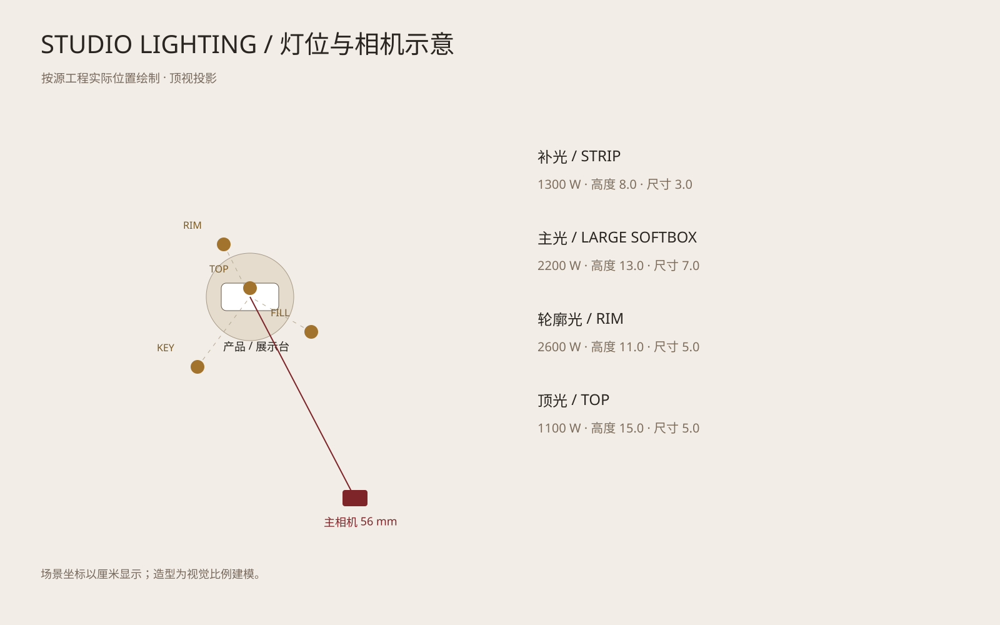

PROJECT 09 / 3D PRODUCT VISUALIZATION
以光，塑造质感
CHANEL N°5
产品建模 · 材质 · 灯光 · 渲染
围绕香水瓶的通透玻璃、琥珀色香液与金属细节，搭建可编辑产品与展示空间。同一模型通过相机、灯光与背景调整，分别输出宣传场景、白底电商图与局部特写。

FROM MODEL TO IMAGE
从结构，到最终成像
可编辑工程 / 同一模型，多种输出
- 01
产品建模
中空玻璃瓶身、独立香液与瓶盖分层搭建，保留瓶颈、金属圈及标签文字。
- 02
材质调试
分别设置玻璃、香液、金属和纸张。玻璃 IOR 1.45，香液 IOR 1.36，并通过样球比较质感。
- 03
场景搭建
组合展台、几何体与背景，利用空间层次和留白建立产品展示的视觉重心。
- 04
布光与相机
4 盏区域灯、3 组相机，控制玻璃轮廓、标签可读性及展台投影。
- 05
渲染输出
使用 Cycles 与 OptiX 输出宣传、电商和特写画面，分别调整背景与构图。
- 06
工程交付
Blender 文件保留模型、材质节点、灯光、相机和独立文字；另导出含 16 个网格的 GLB 模型。
RENDERS & PROCESS / 渲染与制作过程点击图片放大查看
LIGHTING & CAMERA SETUP
灯光与相机配置
依据实际 Blender 工程绘制的灯位与相机示意，展示主光、补光、轮廓光与产品之间的关系。
